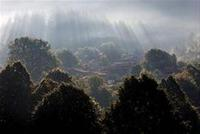
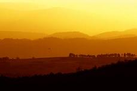

 The mountain region that shelters Istria from the north and the northeast, filled with flower decorated grasslands Ćićarija, is an oasis of untouched nature and beautiful landscapes, abandoned and half-abandoned villages, white macadam roads on which, even today, it is not difficult to picture carts overfilled with charcoal, hay, wood... The world of the past that has remained here in its original form. Only the large sheep herds are gone, because there are no more shepherds who would keep watch...
Chiri biri (Ćiri biri)? This is what the question "How are you?" would sound like in Istro-Romanian. And who are Istro-Romanians? "Nu se știe cât al'e, betăr șåpte stotine de an, a zdrajite limba pira astez. Iel eș istrorumuni". Or in English: "Their number is not known, they are seven centuries old and they only have their language. They are the Istro-Romanians". And, although they most frequently call themselves Istro-Romanians or Vlasi, their neighbours most often call them the "Chiribiris" or even simpler Chichis. Chiribiri, because they begin a conversation with the question "Chiri biri" (how are you) and Chichi because they mostly live on Ćićarija or below the western slopes of Učka.
The forgotten migration
And so we have come to Ćićarija (the accent is on the second "i"). Now, whether Ćićarija got its name after the Chichis or the Chichis were named after Ćićarija, will remain unclear. Tradition says that seven hundred years ago seven caravans of Vlachs came to the region of Istria that had been devastated by the plague. They took off in Transylvania or eastern Serbia, stayed in Dalmatia for a while, and finally arrived to Istria. Five caravans remained in the region of Boljun, Čepić Polje and the slopes of Učka, and two caravans set out towards the mountains surrounding Istria, towards today’s Ćićarija.
We have followed the paths through which they were travelling, the old macadam roads towards Ćićarija. We stop at a place and ascend the mountain Orljak. It is 1016 metres high and from the top there is a beautiful view over the entire Ćićarija and further on towards Istria. To our right there is Žbevnica, the most westward, thousand-metre mountain of Croatia, further on there is the Slovenian Slavnik, and behind us the settlements of Vela and Mala Muna, to our left the lovely Učka and somewhat nearer Planik, the highest peak of Ćićarija. Below us a steep slope, then a white macadam road and beneath it, deep down Lanišće, the municipal centre of Ćićarija with the fertile and wide field in front of the village ... Far down there is Gologorica, Vrh, and Pazinština... Istria, covered with its haze, communities at hill tops, burdened by the history and absorbed with the present.
We are in the middle of the mountain area, once very known for the production of charcoal. Charcoal-kilns were present in every of the ten settlements of Ćićarija, but today charcoal is manufactured in the traditional way only in Brest, to the east of Ćićarija and in Jelovica, at the far west of the Croatian part of Ćićarija. Along with charcoal and the felling of trees, cattle breeding was the main occupation. Today there are no more sheep or shepherds to look after them. In the village Dane there are only seven permanent residents and in Vodice the only permanent residents are the landlord of the local inn, two old men and Croatian policemen and custom officers who "guard" the border with Slovenia.
Linden as a monument
 Some will also call Ćićarija the proud widow, just as is the name of the latest photo monograph dedicated to this region. It is proud because it has so much to show and widow because it is desolate, abandoned, moping alone, forgotten by the world that runs around it, in Istria, the Kvarner sides... The real monument of that Ćićarija can be found in the place Slum above Buzet (Buzet in Istro-Romanian means – mouth). It was created by nature in the shape of an ancient-old linden. A note states that a church was built next to the old linden in Slum at the beginning of the 16th century. And here they are even today, standing next to each other, the church and that same tree, already in the 16th referred to as "old linden". Only the outer core is left, the greater part of the tree was worm-eaten, but it is still holding on. One can even dance in it.
And Ćićarija is holding on in that same manner, with its grasslands covered with flowers and billions of butterflies that wake up in May and June in order to treat Ćićarija and the passengers that visit it with their beauty.
The beauty of wilderness
Ćićarija is best seen and experienced in freedom, on the mountain plateaus dappled with the ancient Vlach, shepherds’ dry-stone walls and karst valleys. In the settlements it tells us the sad story of forgotten history. The abandoned houses, forgotten in a moment in time, somewhere still with pots and rakes left in front of the door as if the host will return any moment. The history that stopped somewhere in the beginning or the middle of the previous century and cannot go further, because there is no-one to start the wheel of time. In these Ćićarija places, time has stopped... it is a bit sad, wistful, but again magnificent in its silence and steadiness, despite and regardless of everything.
Outside on the glades, on the peaks from which one has a lovely view, kite fliers and paragliders take off from the hill Raspadalica above Buzet, not far from that historical Slum, there reigns joy of some weird wild beauty. The wild roses in bloom that grow like a line of trees along the white roads, the white daffodils that bloom on the mountain slopes in June, as if it was snowing... and the gurgle of the stream that springs under the live rock at Kotli, not far from the climbers’ chalet above Brgudac, the easiest way to which is from Lupoglav, one of the usual "entries" into Ćićarija on the east side...
They say that Ćićarija is the ideal place to heal stress. The tame wilderness of its landscape, time that has stopped and that does not feel like going anywhere, silence cut off by the singing of a bird, or the barking of a dog, the most reliable sign that there is somebody living in the village before us... Ćićarija is waiting for someone to wake it up, but, let it be gently, without construction machinery and the horror of the newly built village villas. By coincidence the entire Ćićarija became a kind of a national park and it would be good if its present state were legalised, for which there are some indications. The mountain tops, a park of nature for healing stress...
Pitoma divljina Ćićarije
Planinsko područje što zakriljuje Istru sa sjevera i sjeveroistoka, prepuno cvijećem urešenih pašnjaka, Ćićarija, oaza je netaknute prirode i prekrasnih pejsaža, napuštenih i polusrušenih sela, bijelih makadamskih cesta, na kojima nije teško zamisliti i danas kola pretovarena drvenim ugljenom, sijenom, drvima... Svijet prošlosti, koja je ovdje ostala u svom izvornom obliku, jedino nema velikih stada ovaca, jer više nema ni pastira koji bi ih čuvali...
Ćiri biri? Tako bi nekako na istrorumunjskom glasilo pitanje: Kako ste? A tko su Istrorumunji? "Nu se știe cât al'e, betăr șåpte stotine de an, a zdrajite limba pira astez. Iel eș istrorumuni." Ili na hrvatskom: "Ne zna se koliko ih je, stari su sedam stoljeća, a imaju samo jezik. Oni su Istrorumunji." I premda sebe najčešće nazivaju Istrorumunjima ili Vlasima, njihovi ih susjedi najčešće zovu "Ćiribirci" ili još jednostavnije Ćići. Ćiribirci jer razgovor počinju pitanjem "ćiri biri" (kako si) a Ćići zato jer dobrim dijelom žive na Ćićariji ili podno zapadnih padina Učke.
Zaboravljena seoba
I tako dođosmo u Ćićariju (naglasak je na drugom "i"). E sad, je li Ćićarija dobila ime po Ćićima ili su Ćići dobili ime po njoj, ostat će nerazjašnjeno.
Predaja govori da je prije sedamstotinjak godina na područje Istre, poharano kugom, došlo sedam karavana Vlaha. Krenuli su iz Transilvanije, ili istočne Srbije, zadržali se kraće vrijeme u Dalmaciji i napokon stigli u Istru. Pet karavana ostalo je na području Boljuna, Čepić Polja i obronaka Učke, a dvije karavane zaputile su se prema planinskom vijencu što okružuje Istru, na današnju Ćićariju.
Zaputismo se putovima kojima su i oni putovali, starim makadamskim cestama put Ćićarije. Na jednom mjestu zastajemo i penjemo se na planinu Orljak. Visoka je 1016 metara, a s vrha puca prekrasan pogled na cijelu Ćićariju i dalje prema Istri. Desno od nas Žbevnica, najzapadniji tisućumetraš Hrvatske, podalje od nje slovenski Slavnik, iza nas sela Vele i Male Mune, lijevo prekrasna Učka i nešto bliže Planik, najviši vrh Ćićarije. Pod nama strma padina, potom bijela makadamska cesta i podno nje, u dubini Lanišće, općinsko središte Ćićarije s plodnim i širokim poljem ispred naselja... Daleko dolje Gologorica, Vrh, Pazinština... Istra obavijena svojim izmaglicama, komunima na vrhu brda, opterećena poviješću i zaigrana u sadašnjosti.
Nalazimo se u srcu planinskoga područja, nekada iznimno poznatog po proizvodnji drvenoga ugljena. Ugljenara je bilo u svakom od desetak naselja Ćićarije, danas se drveni ugljen na tradicionalan način proizvodi jedino u Brestu, na istoku Ćićarije i u Jelovicama na krajnjem zapadu hrvatskoga dijela Ćićarije. Uz drveni ugljen i sječu šume, stočarstvo je bilo glavno zanimanje. Danas više nema ovaca, a nema ni pastira koji bi ih čuvali. U selu Dane stalno živi svega sedam stanovnika, u mjestu Vodice stalni su jedino gostioničar u lokalnoj gostionici, dva starca i hrvatski policajci i carinici koji "čuvaju" granicu prema Sloveniji.
Lipa spomenik
Neki će Ćićariju zvati i ponosnom udovicom, kako se zove i najnovija fotomonografija posvećena ovom području. Ponosna jer ima toliko toga pokazati, a udovicom, jer je pusta, napuštena, čami sama, zaboravljena od svijeta što juri oko nje, u Istri, na kvarnerskim stranama... Pravi spomenik takve Ćićarije naći ćemo u mjestu Slum poviše Buzeta (Buzet na istrorumunjskom znači – usta). Izvajala ga je priroda u liku prastare lipe. Zapis kaže da je početkom 16. stoljeća u Slumu izgrađena crkva pokraj stare lipe. I evo ih i danas, stoje jedna kraj druge, crkva i ona ista već u 16 stoljeću "stara lipa". Ostao je od nje samo vanjski plašt, crvotočina je izgrizla najveći dio stabla, ali drži se. I zaplesati se u njoj može.
A tako nekako drži se i Ćićarija s pašnjacima prekrivenim cvijećem i milijardama leptira što se probude u svibnju, lipnju da bi svojom ljepotom počastili Ćićariju i putnike što ju pohode.
Ljepota divljine
Ćićariju je najljepše i najbolje doživjeti u slobodi, na planinskim visoravnima prošaranim drevnim vlaškim, pastirskim suhozidima i vrtačama. U naseljima, priča nam tužnu priču zaboravljene povijesti. Napuštene kuće, zaboravljene u trenutku vremena, ponegdje još s ponekom zdjelom, grabljama ostavljenim pred vratima kao da će se domaćini sad vratiti. Povijest što je stala negdje početkom ili sredinom prošloga stoljeća i ne može više naprijed, jer kotač vremena nema tko pokrenuti. U ćićarijskim mjestima vrijeme stoji... pomalo tužno, sjetno, a opet veličanstveno u svojoj tišini i postojanosti, usprkos i unatoč svemu.
Vani, na proplancima, na vrhovima s kojih se spuštaju prekrasni pogledi ili pak letači zmajevima i paraglajderima kao s brda Raspadalica poviše Buzeta, nedaleko od onoga povijesnog Sluma, vani vlada veselje neke čudne divlje ljepote. Divlje ruže u cvatu što rastu poput drvoreda uz bijele ceste, bijeli sunovrati što se u lipnju rascvatu po planinskim padinama kao da je pao snijeg... I klokot potoka što izbija ispod žive stijene na Kotlima, nedaleko od planinarskoga doma poviše Brgudca, kamo se najlakše dođe iz Lupoglava, jednog od uobičajenih "ulaza" u Ćićariju na istočnoj strani...
Ćićarija je idealno mjesto, kažu, za liječenje stresa. Pitoma divljina njezina krajolika, vrijeme koje je stalo i nikud mu se ne ide, tišina isprekidana pjevom ptice ili lavežom psa, najpouzdanijega znaka da u selu pred nama još netko živi... Ćićarija čeka da ju netko probudi, samo, neka to bude nježno, bez građevinskih strojeva i pošasti novoizgrađenih seoskih vila. Igrom (ne)sretnoga slučaja cijela je Ćićarija postala svojevrsnim parkom prirode, bilo bi dobro kad bi se to sadašnje njezino stanje i ozakonilo, a postoje neke naznake. Planinski vijenac, park prirode za liječenje stresa...
Author/Piše: Damir Konestra
Photos/Fotografije: Ratko Mavar
March 30, 2009
© 2009 Livingstone Magazine